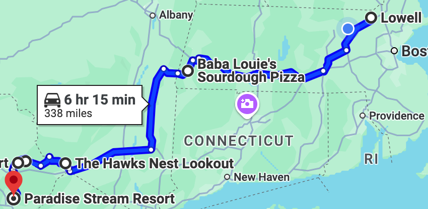
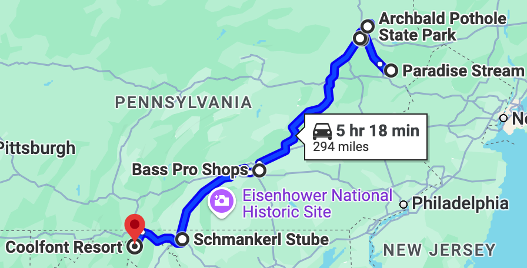

This website documents the first two days of the roadtrip I, Sebastian, went on with Saschi in the summer of 2024. It includes destinations, restaurants, hotels, travel times, maps, and photos. All of the information on this page is for entertainment purposes only and should be verified by oneself if one plans to go.
Lots of effort went into picking the restaurants as we had to find places that could reliably accomodate my Celiac Disease. All restaurants were found using Find Me Gluten Free, a great resource for anyone who seeks to avoid eating gluten. While all restaurants will be mentioned on the respective days they were visited, they will also be compiled on the Restaurants page, accompanied by images.
Below is a table that details the final destination of each day, and how long it took to get there. One can get more information about a day by clicking on the Day column entry or get a Google Maps link of a route by clicking on the image.
| Destination | Time | Day | Route Map |
|---|---|---|---|
| Lowell, MA | 0h 00m | Day 0 | |
| Cresco, PA | 6h 15m | Day 1 |  |
| Berkeley Springs, WV | 5h 18m | Day 2 |  |